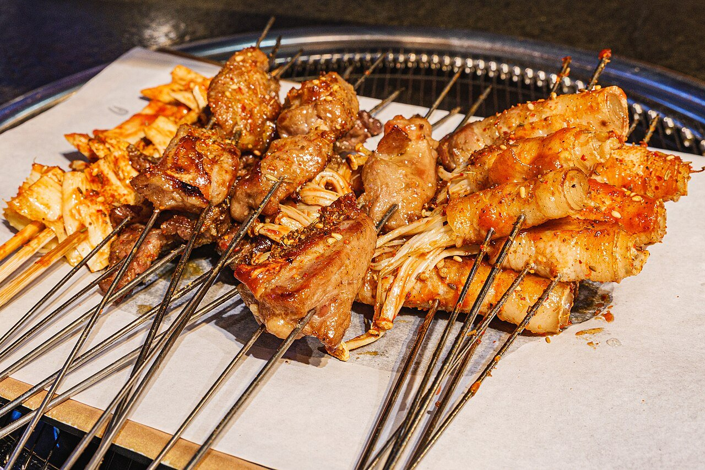

D1 · 09/25
新沂｜烧烤把旅行打开
泰州 → 新沂 · ≈300km · 3.5h · 晚上出发
第一天不证明体力。下班后直上京沪高速，夜里到新沂，认真吃顿烧烤就够。
天气
🌧 泰州雷暴 → 新沂大雨 · 夜间降水概率 100%（约33mm）· 19~23℃ · 风4级
今晚雨大路滑：拉大车距、降速，服务区多休息
今晚雨大路滑：拉大车距、降速，服务区多休息
天气穿衣
白天 24℃ / 夜里 17℃（常年同期参考）；晚上出发微凉，短袖 + 薄外套。
吃什么
新沂烧烤
羊肉串烤羊排烙馍
住哪里
新沂城区连锁酒店，停车方便、明早出城顺路。
夜车规则：困了就换人驾驶，或进服务区眯半小时，不硬撑。
轻松度 ★★★★☆重点：夜行 · 烧烤